Hoby kuu
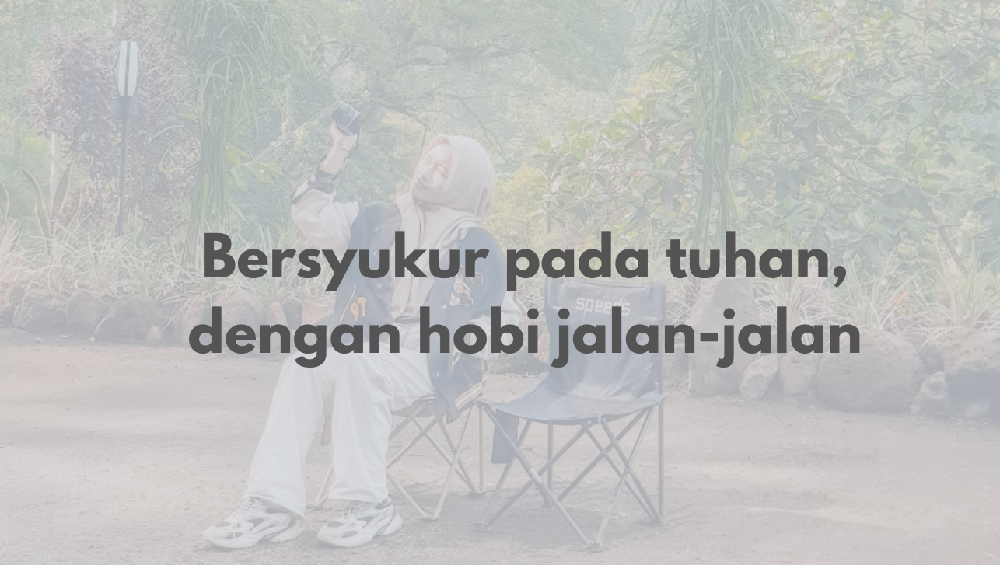Bagi saya, jalan-jalan di alam adalah momen terbaik untuk bersyukur. Saat kaki melangkah di jalan setapak yang dikelilingi pepohonan rindang, saya merasakan begitu banyak nikmat yang sering tak disadari. Suara gemericik air sungai, kicauan burung, dan semilir angin yang menyapu wajah membuat saya sadar bahwa Tuhan telah menciptakan dunia ini dengan begitu indah. Di tengah hiruk-pikuk kehidupan, hobi ini mengajarkan saya untuk melambat sejenak, melihat sekitar, dan mensyukuri setiap detik yang diberikan Tuhan.
Tentang Saya
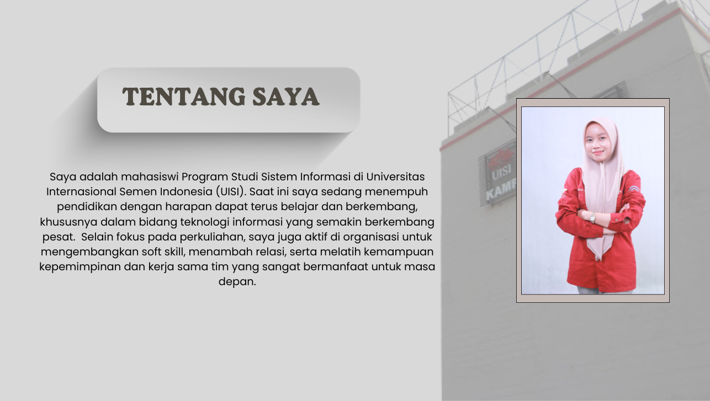
Organisasi
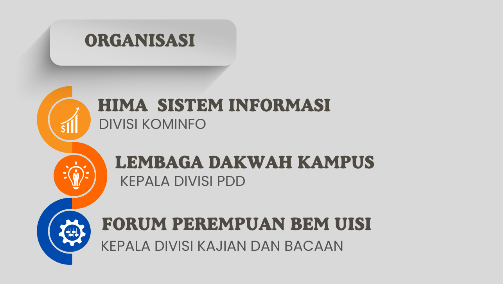My Movie
Di tengah udara sejuk dan pemandangan gunung yang memanjakan mata, saya menikmati waktu dengan cara yang sederhana. Duduk bersama, berbagi cerita ringan, sambil mencicipi jajanan favorit yang kami bawa dari rumah. Tidak ada hal yang mewah, hanya obrolan hangat, tawa kecil, dan suasana yang membuat hati terasa lebih dekat dengan alam dan satu sama lain. Momen seperti ini membuat saya sadar bahwa kebahagiaan seringkali hadir dalam kesederhanaan yang tulus.
Play List
Makna lagu "Mangu" oleh Fourtwnty feat. Charita Utami secara umum adalah tentang sebuah hubungan yang terhalang oleh perbedaan keyakinan atau agama.
Lagu "Nina" karya .Feast menceritakan tentang kasih sayang seorang ayah kepada anak perempuannya.
Lagu Indonesia Raya memiliki makna yang sangat dalam, mencakup semangat persatuan, cinta tanah air, dan cita-cita bangsa Indonesia untuk merdeka dan berdaulat..
My form
Buku Tamu
Projek
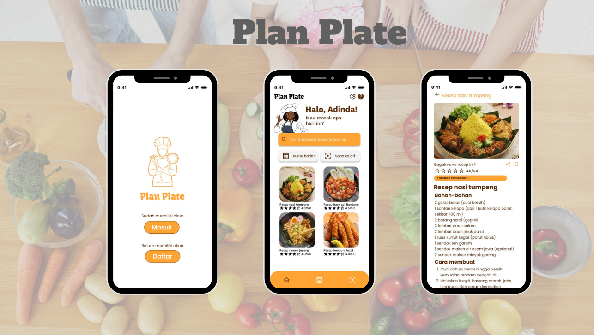
Edukasi Memasak: Membagikan tips dan resep memasak sehat dan praktis untuk semua kalangan.
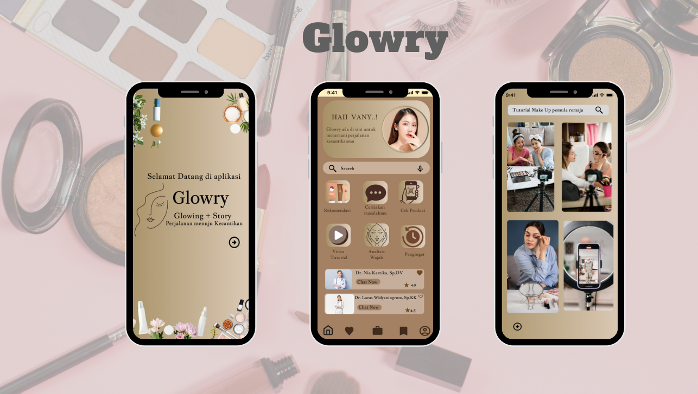
Edukasi Kecantikan: Memberikan informasi seputar perawatan diri, skincare, dan makeup yang aman.
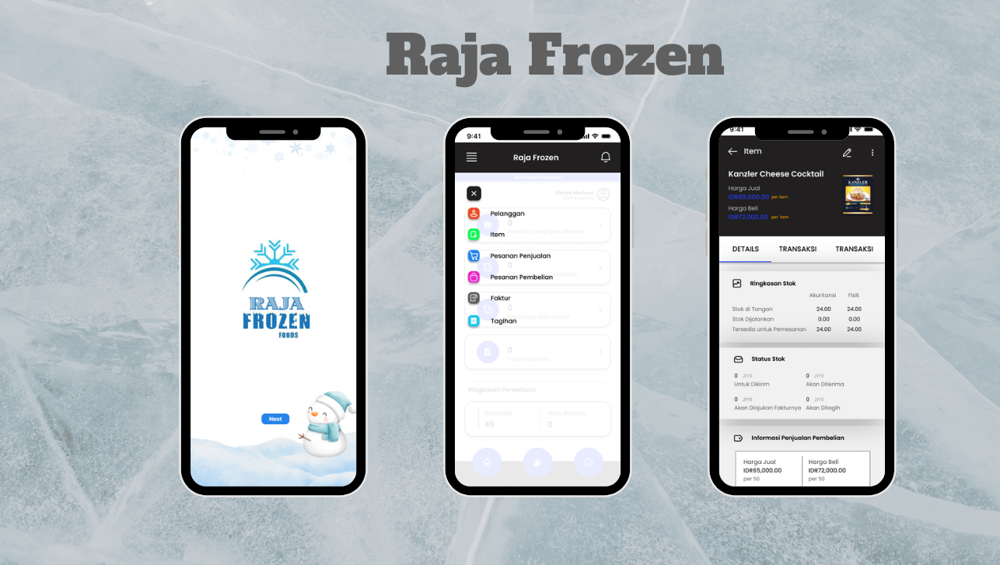
Toko Retail Frozen Food: Menyediakan makanan beku berkualitas dan praktis dengan harga terjangkau.
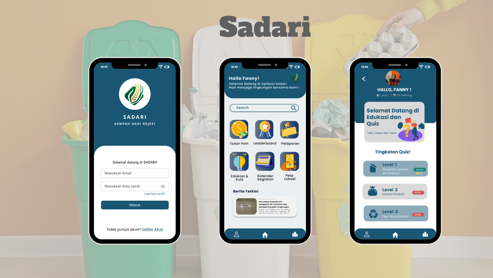
Edukasi Sampah: Mengajak masyarakat untuk peduli lingkungan melalui pengelolaan sampah yang baik dan benar.
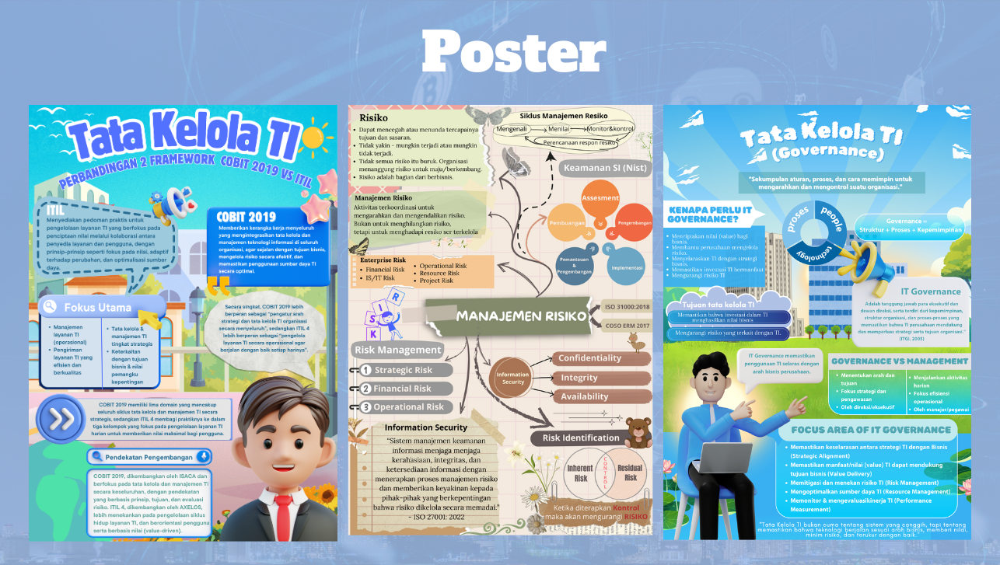
Poster Tata Kelola Teknologi Informasi.
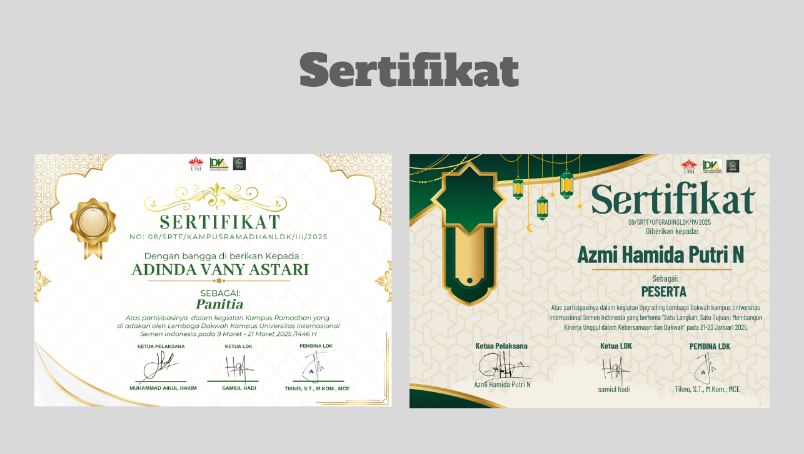
Sertifikat: Pembuatan sertifikat pada beberapa acara kepanitiaan.
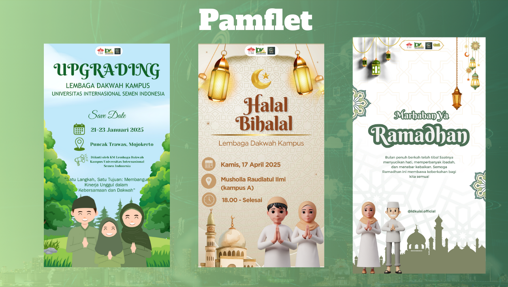
Pamflet kegiatan adalah informasi tentang sebuah acara atau kegiatan tertentu.
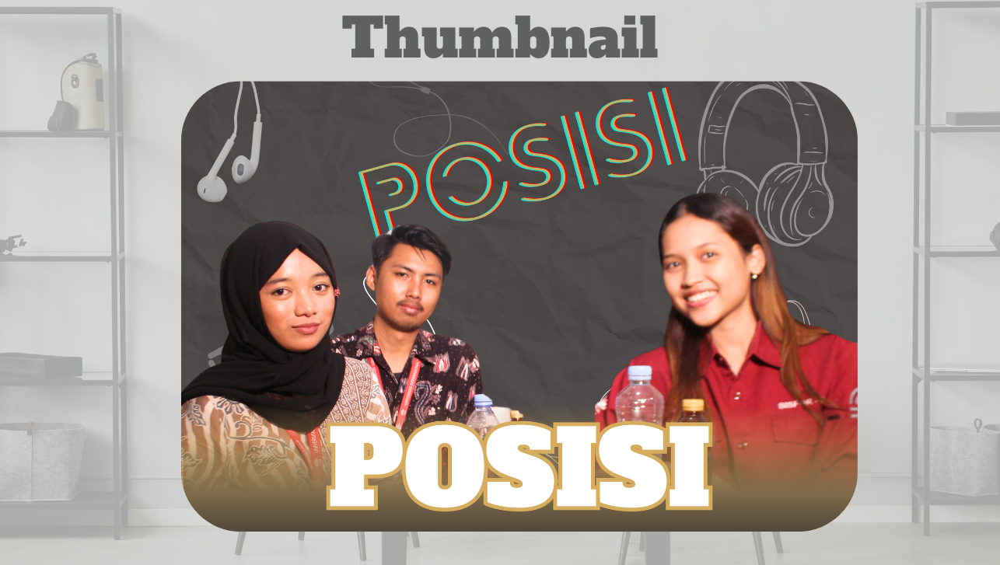
Thumbnail, Podcast "POSISI", ngobrol santai bersama sistem informasi.